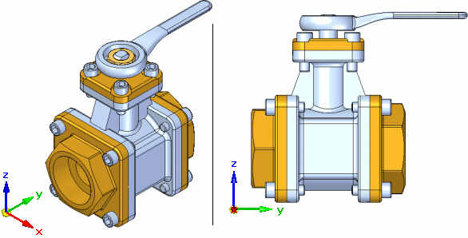
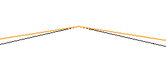
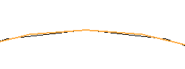
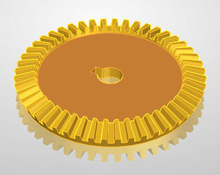
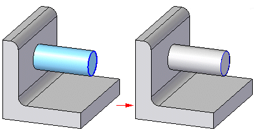
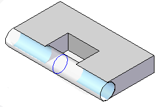

View page (Solid Edge Options dialog box, Part environment)
- Application Display
-
- Automatic selection
-
Specifies that Solid Edge should automatically select the best graphics card option on startup. Solid Edge delivers a file named AutoConfigure.txt to the Solid Edge Program folder. When the Automatic Selection option is set, Solid Edge uses the information in the AutoConfigure.txt file to build the list of display options available.
For example, suppose the default setting in the AutoConfigure.txt file for your installed graphics card is Graphics Card (Advanced). When the Automatic Selection option is set, the Application Display setting is automatically set to the Graphics Card (Advanced) option.
You can also manually change the Application Display setting by clearing the Automatic Selection option.
- Application Display
-
-
Graphics Card Driven (Advanced)
-
Graphics Card Driven
-
Software Driven (Advanced)
-
Software Driven
-
- Use display buffers
-
Enables or disables the use of display buffers. A display buffer is an OpenGL(r) capability that allows the CAD application to load geometry and images to the graphics card memory to improve performance and reduce latency during dynamic view manipulations. Using the dedicated resources of the graphics card is much faster than using process memory. This option is set by default for graphics card driven options and is not available for software driven options.
To learn more about these options, see Optimizing Solid Edge display performance.
- Quick View Cube Settings....
-
Opens the Quick View Cube Settings dialog box.
- Show orientation triad
-
Displays the orientation triad in the bottom-left corner of the graphic window. The orientation triad shows the current orientation of the view x, y, and z axes. This can be useful when rotating the view orientation and when measuring distances between elements or parts.

- Mouse wheel forward=zoom out, back=zoom in
-
Changes the direction the mouse wheel zooms.
- 3D input device
-
Specifies that you want to check for 3D devices such as a space ball or space mouse. This option activates when you restart Solid Edge.
- View transition
-
Specifies how Solid Edge switches from one view orientation to another. When you set this option, Solid Edge computes several intermediate frames between the first and second orientations to produce the visual effect of flying through the model. You can adjust the speed of the transition between the two orientations to accommodate slower and faster display configurations and to suit your personal preference. This option can give you a better understanding of the relationships between orientations and ensures that you select the appropriate view for your work.
- Culling
-
Active only in dynamic view manipulations, instructs the display system to ignore display requests for certain objects if it detects that the display is taking an excessive amount of time.
Objects are dropped from display based upon several factors, including the time since the start of the display of the current frame, the range of the object with respect to the zoom level of the view, and the maximum allowable rejection ratio.
The maximum allowable rejection ratio defines the ratio of an object's range to the view volume and is controlled by the culling slider. The default value on the slider is 20%, which means an object that is smaller than 20% of the size of the view volume's maximum dimension (width, height, or depth) is rejected, regardless of the amount of time required to update the view. The slider ranges from 0%, where nothing is rejected, to 100%, where all objects may be rejected. To prevent the discarding of relatively large objects with respect to the zoom level of the view, you should move the slider to the left. To discard larger objects with respect to the zoom level of the view, you should move the slider to the right.
Because culling is highly dependent of the assembly structure, assemblies made up of mostly small parts may require the slider to be set toward the far left and assemblies made up of mostly large parts may require it to be set toward the right.
Moving the slider to the left decreases the desired performance while moving the slider to the right increases the desired performance. Solid Edge attempts to maintain a consistent frame rate by dropping objects from the display. Objects that are small relative to the current zoom level are dropped first and progressively larger objects are dropped until it is determined that the desired performance cannot be satisfied. At that point no other objects are considered for display.
- Arc smoothness
-
Specifies the minimum number of lines that represent an arc.
Low values (a lower number of lines) make the display coarser. Consequently, low values make the display refresh faster and decrease the memory required for display lists.
High values (a higher number of lines) make the display smoother. Consequently, high values make the display refresh slower and increase the memory required for display lists.
- Auto sharpen
-
Provides explicit control of the arc- /chord deviation defining an arc or circle. A large deviation results in an unappealing display of arcs or circular shapes. This option is a global (non-document specific) setting.
-
Off: the deviation is large (low level of detail). This is the default setting for new Solid Edge files.

Note:This provides the fastest processing.
-
Low: the deviation is smaller with an increased level of detail-best when loading large assemblies.
-
Standard: the deviation is smaller than Low.

-
High: the deviation is smallest (high level of detail).
Note:This provides the best quality, but increases processing time.
-
- Anti-aliasing (global)
-
Applying anti-aliasing to a part or assembly reduces or removes the jagged display of angular edges. You can control the level of anti-aliasing by selecting high, medium, or low for Solid Edge shading.
- Floor reflection
-
Provides a realistic reflection underneath the part or assembly when using a shaded or gradient background.

- Use shading on highlight
-
Determines if the part faces/ body/element under the cursor are shaded. If this option is unchecked, the part faces / body / element under the cursor display as edges only.
- Use shading on selection
-
Determines if faces and features are shaded when you select them with the mouse. The option is only available when you set the Application Display to Graphics Card Driven.
- Glow
-
If the Use Shading on Selection or Use shading on highlight option is selected, the slider controls the amount of glow that is displayed in the Graphics Card Advanced application display setting. Setting the value to 0 disables glow, while the options 1, 2, or 3 increases the amount of glow.
- Use shading on reference planes
-
Determines whether reference planes display as shaded when you shade the window. When you clear this option, reference planes display as wireframe when you shade the window.
- Opacity
-
Sets the opacity for reference planes when the window is shaded.
- Dim surrounding components during in-place edit and inactive design bodies in multi-body documents. Inactive design bodies use the opacity setting plus 50%.
-
Determines whether the surrounding components are dimmed and translucent when you in-place activate a part or subassembly and work within a shaded window.
When you set this option, you can also use the Opacity slider to control the translucency of the surrounding components. This option can make it easier to visualize the assembly component you in-place activated.
- Opacity
-
Sets the opacity for the surrounding parts when the window is shaded.
- Use shading on constructions
-
Determines whether construction surfaces display as shaded when you shade the window. When you clear this option, construction surfaces display as wireframe when you shade the window.
- Process hidden edges during view operations
-
Specifies that hidden edges are processed when you dynamically change the view using the view manipulation commands, such as Zoom, Zoom Area, Pan, Fit, and Rotate. Setting this option specifies that the edges of the model are processed to determine whether the edges are visible, hidden, or silhouette edges.
Processing edges during dynamic view manipulations can negatively impact interactive performance when working with complex parts or large assemblies. Clearing this option can improve interactive performance during view manipulations, such as when dynamically rotating a view.
When this option is cleared and Visible and Hidden Edges is the current display setting, all the model edges are displayed as wireframe edges, and silhouettes are not calculated. When the dynamic view manipulation is completed, the edges are processed.
When this option is cleared and Shaded with Visible Edges is the current display setting, only the shaded faces of the model are displayed.
For more information on working with large assemblies, see Working with large assemblies efficiently.
- Display drop shadows during view operations
-
Specifies that drop shadows, if turned on in the View Overrides command, are displayed during view manipulations, such as zoom, rotation, and dynamic pan.
- Display Inter-Part copies as constructions
-
Specifies that inter-part copies for a part are displayed in an assembly using the construction color. When this option is cleared, inter-part copies for a part cannot be displayed in an assembly. When this option is set, you can display the inter-part copies for a part in an assembly using the Show Component Construction Surfaces command.
- Show triangulation bend lines for Lofted Flanges
-
Specifies that the triangulation bend lines are displayed for lofted flanges.
- Clipping Planes
-
Sets the options for the display and behavior of clipping planes. You can use the Set Clipping Planes command to define a narrow display region of a part or assembly to make it easier to complete a task.
- Dynamic Clipping
-
Dynamically clips the display of the part or assembly when defining the display depths for the active window. When working with a complex part or assembly, clearing this option improves performance. You can also specify whether the display is dynamically clipped using the Dynamic Clipping button on the Set Clipping Planes command bar.
- Plane 1
-
Sets the color for the first clipping plane when the window is shaded. You can select a color from the list.
- Opacity
-
Sets the opacity for the first clipping plane when the window is shaded.
- Plane 2
-
Sets the color for the second clipping plane when the window is shaded. You can select a color from the list.
- Opacity
-
Sets the opacity for the second clipping plane when the window is shaded.
- Feature Preview
-
Sets the options for dynamic extent during feature creation.
- Dynamically preview feature creation (Ctrl+Shift+D temporarily overrides this setting)
-
Specifies that the feature is dynamically displayed during the Extent step of feature creation.
- Result
-
Controls the color for the resulting feature.

Note:When working with an assembly, only the Tool body is shown during feature creation.
- Tool body
-
Controls the color of a cutout when it is not intersecting model geometry. Once the cutout intersects the model, the portion of the model being removed changes to the result color.

- Opacity
-
Sets the opacity for the tool body.
How do I
Open the Solid Edge Options dialog boxLearn more
File locationsLook up more details
General tab (Solid Edge Options dialog box, Draft environment)View page (Solid Edge Options dialog box, Draft environment)
Save page (Solid Edge Options dialog box)
File Locations page (Solid Edge Options dialog box)
Manage tab, Solid Edge Options dialog box
User Profile page (Solid Edge Options dialog box)
Manage page (Solid Edge Options dialog box)
Dimension Style page (Solid Edge Options dialog box)
Drawing View Style tab (Solid Edge Options dialog box)
Generative Design tab (Solid Edge Options dialog box)
Drawing View Wizard tab (Solid Edge Options dialog box)
Helpers tab (Solid Edge Options dialog box)
Attachment Units page (Solid Edge Options dialog box, Draft)
Edge Display tab (Solid Edge Options dialog box)
Drawing Standards tab (Solid Edge Options dialog box)
Annotation tab (Solid Edge Options dialog box)
General page (Solid Edge Options dialog box, Part environment)
General page (Solid Edge Options dialog box, Profile environment)
Colors tab (Solid Edge Options dialog box)
Colors tab (Solid Edge Options dialog box, Draft)
Inter-Part page (Solid Edge Options dialog box)
Simulation tab (Solid Edge Options dialog box)
Thermal Load Options dialog box
General page (Solid Edge Options dialog box, Assembly environment)
Units page (Solid Edge Options dialog box)
View page (Solid Edge Options dialog box, Assembly environment)
Assembly page (Solid Edge Options dialog box)
Assembly Open As page (Solid Edge Options dialog box, Assembly environment)
Shape Search page (Solid Edge Options dialog box)
Requirements page (Solid Edge Options dialog box)
Electrical Routing page (Solid Edge Options dialog box)
Tube Properties page (Solid Edge Options dialog box)
Flat Pattern Treatments page (Solid Edge Options dialog box)